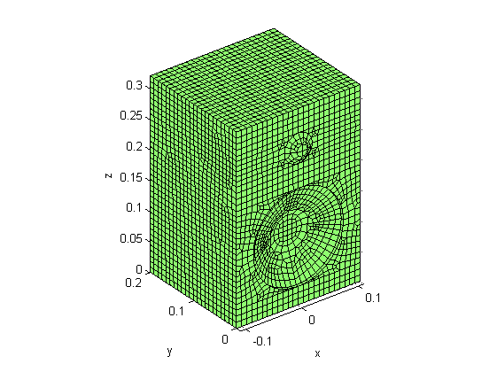
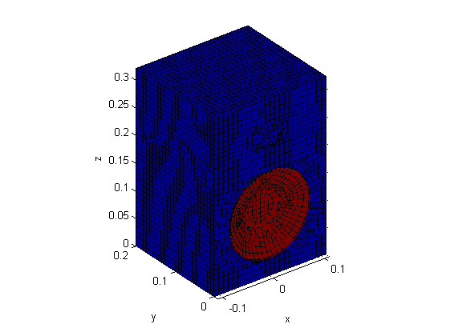
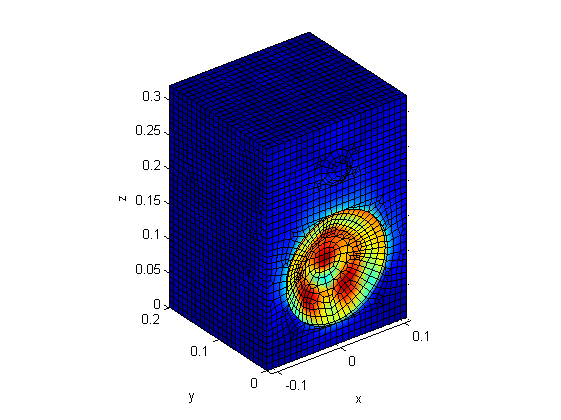
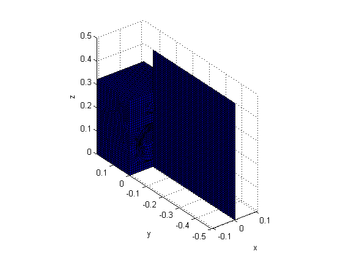

Sound radiation by a loudspeaker box
This demo shows how to apply the conventional BEM implementation to model sound radiation from a loudspeaker box geometry.
Contents
Material properties of air
csound = 340; % speed of sound rho0 = 1.225; % mass density
Generate surface mesh
First, the loudspeaker mesh is imported.
boxfile = 'data/box.bdf'; boxfile = fullfile(fileparts(mfilename('fullpath')), boxfile); box = import_bulk_mesh(boxfile); figure; plot_mesh(box);
Importing bulk file...Done Reading 4641 GRID* entries...Done Reading 18 CTRIA3 entries...Done Reading 4630 CQUAD4 entries...Done
Boundary condition
expression = '((z-0.11).^2 + x.^2 < 0.085^2) & (y < 0.026 & y > 1e-3)'; mnodind = mesh_select(box, expression, 'ind'); nNodes = size(box.Nodes,1); v_s = zeros(nNodes,1); v_s(mnodind) = 1; figure; plot_mesh(box, v_s);
Solve surface equations
f = 5000; % frequency in Hz [H, G] = bemHG(box, 2*pi*f/csound, 'lin'); Gvs = G*v_s; clear G; p_s = H \ Gvs; clear Gvs H figure; plot_mesh(box, abs(p_s));
Generate field point mesh
Le = csound/f / 8; Lf = [.5 .5]; field = translate_mesh(... rotate_mesh(create_slab(Lf, ceil(Lf/Le)), [0 0 0], [0 -1 0], pi/2),... [0 -.5 0]); points = field.Nodes(:,2:4); plot_mesh(box); plot_mesh(field);
Generate far field system matrices
[H, G] = bemHG(box, 2*pi*f/csound, 'lin', points); p_f = (H * p_s - G * v_s) / (4*pi); figure; plot_mesh(field, 20*log10(abs(p_f))); shading interp; alpha .8; plot_mesh(box, 20*log10(abs(p_s)));